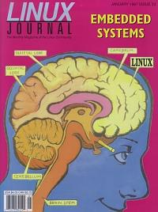

Shutdown Archive web server
Search:
Linux Journal
Issue #33/January 1997

Features
Let Linux Speak
by David Sugar
How an ad for a speech synthesizer led to the the development of a speech server under Linux.
Booting Linux from EPROM
by Dave Bennett
A quick look at making Linux bootable from EPROM on a 486single board computer.
Using Linux with Programmable Logic Controllers
by J.P.G. Quintana
Combining programmable logic controllers with linux can be acost-effective and robust method for providing specializedcontrol systems.
News & Articles
Disk Maintenance under Linux (Disk Recovery)
by David A Bandel
Satellite Tracking with Linux
by Kenneth E Harker
Free SCO OpenServer Has Its Place
by Evan Leibovitch
Caldera's Bryan Sparks
by Phil Hughes
Reviews
Product Review
Netactive SynergieServer Pro
by Jonathan Gross
WWWsmith
Java and Client-Server
by Joe Novosel
At the Forge
CGI Programming
by Reuven Lerner
Columns
Take Command
unzip
by Greg Roelofs
New Products
Linux Gazette
Two Cent Tips
by Marjorie Richardson
Archive Index
Shutdown Archive web server
Search:
Copyright © 1994 - 2018
Linux Journal
. All rights reserved.